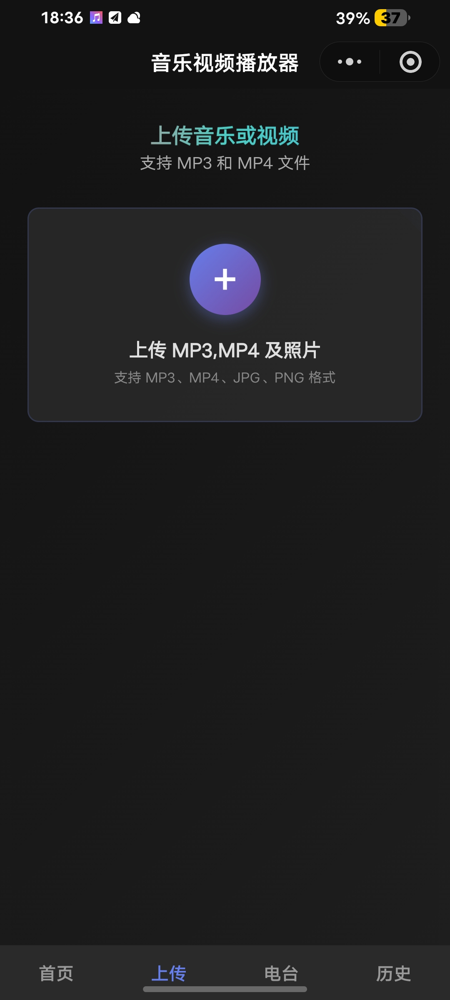
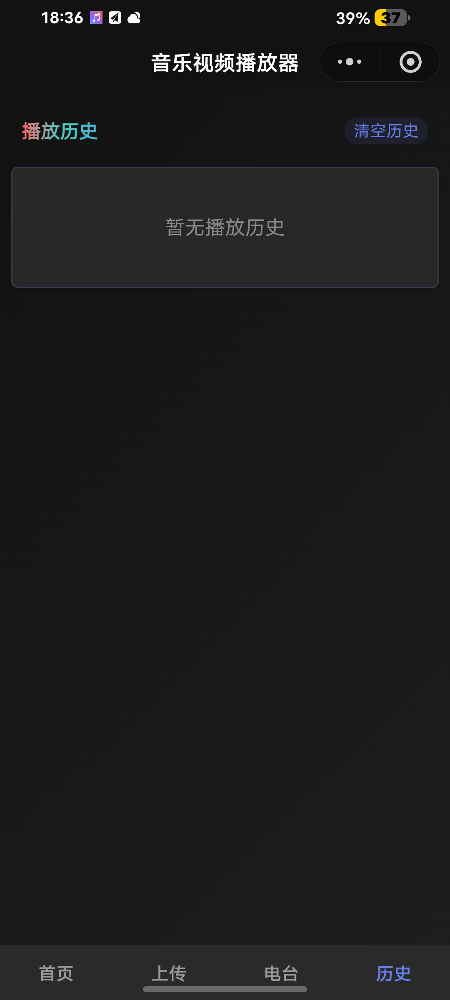
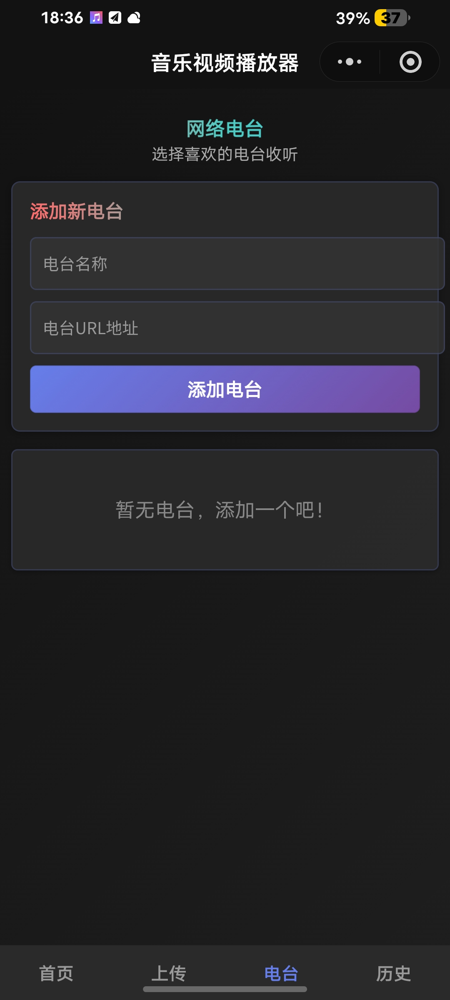
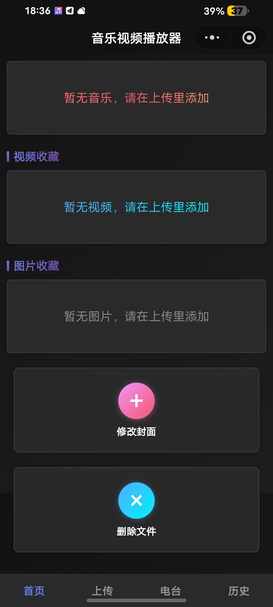

音乐收藏
把你喜欢的音频统一收录在一个小空间里，打开即用。
把想收藏的音频、照片、视频统一收进一个轻量小程序里，随手打开就是你的私人收藏夹。




一个迷你仓库，把喜欢的音频 / 照片 / 视频都装下。
把你喜欢的音频统一收录在一个小空间里，打开即用。
支持 MP4 视频上传，想看的片段都保存在手边。
照片、截图、海报，JPG/PNG 都一起收好。
添加喜欢的电台 URL，名字自定，喜欢的频道随时在线听。
最近听过、看过的都自动留下来，找回线索不再难。
深色玻璃拟态界面，干净无干扰，体验流畅。